Criação de Terrenos no Unity 3D
Terrenos criam um background para jogos 3D no Unity.
O Unity 3D traz ferramentas que tornam fácil a criação de terrenos com um terreno, elevações, platôs, árvores, gramas, etc.
Criação de Terreno no Unity 3D 4.5.3:
GameObject – Create Other – Terrain
Ele aparece assim:
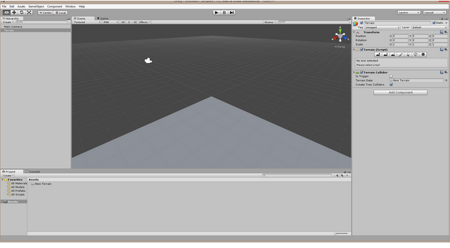
Com ele selecionado, no Inspector aparece um componente Terrain (Script).
Clique no último botão, Terrain Settings para visualizar as configurações do Terreno. Originalmente são estas:
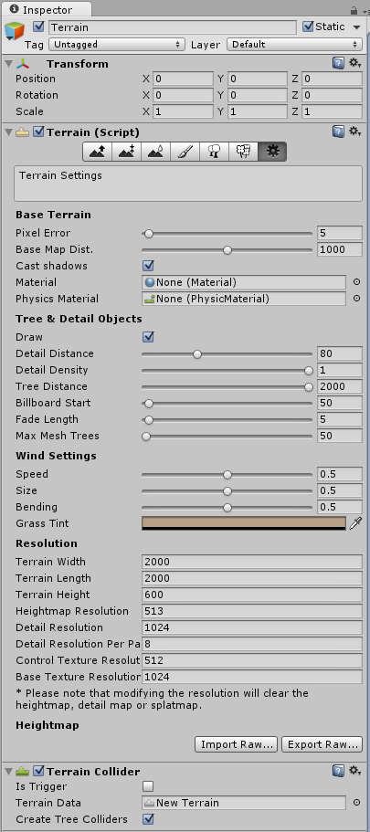
Configurações
Para trabalhar com mais conforto, vamos alterar Terrain Width para 200 e Terrain Length também para 200.
Agora rolamos o botão do meio do mouse para aumentar o zoom até aparecerem as limitações do terreno, como abaixo:
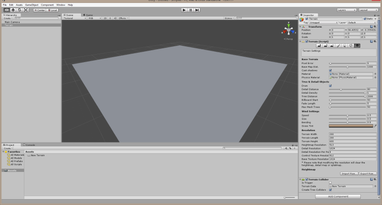
Alterando o Terreno
As Ferramentas de construção do terreno:
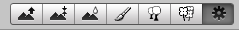
Pela ordem as ferramentas são:
Raise / Lower (ao clicar na primeira temos)

Temos várias brochas e podemos alterar o Size e a Opacidade delas.
A característica principal desta é que podemos arrastar para criar alguma elevação e se mantiver o botão pressionado a elevação continua sem limites.
Vejamos exemplos:
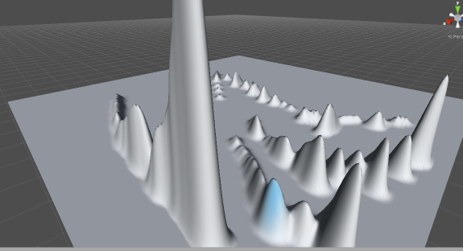
Antes de começar a construir o terreno adicione uma luz direcional.
Posição da Câmera
É muito importante deixar a câmara numa posição que faça nosso terreno aparecer quando o play for pressionado, quando o jogo começar.
O terreno precisa ficar numa região coberta pela Main Camera.
Clique na Main Camera e se ela não aparecer tecle F. Ela aparecerá. Então clique no botão Move (das 4 setas) e mova a câmara para uma posição acima e à esquerda do terreno.
Se o tereno desaparecer faça o mesmo: clique em Terrain na hierarquia e tecle F.
Então mova ou mude o zoom do mesmo com o mouse.
Interessante é girar a luz para uma posição de maior destaque. Gire e execute para ver no que dá.
Paint Height
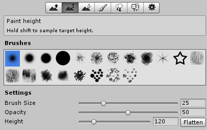
A diferença deste para o Raise/Lower é que tem mais um parâmetro, o height. Isso permite limitar a altura dos montes e picos, criando platôs. Reduza um pouco o Height e crie um monte:
Posso reduzir os existente e criar novos com a altura máxima escolhida.
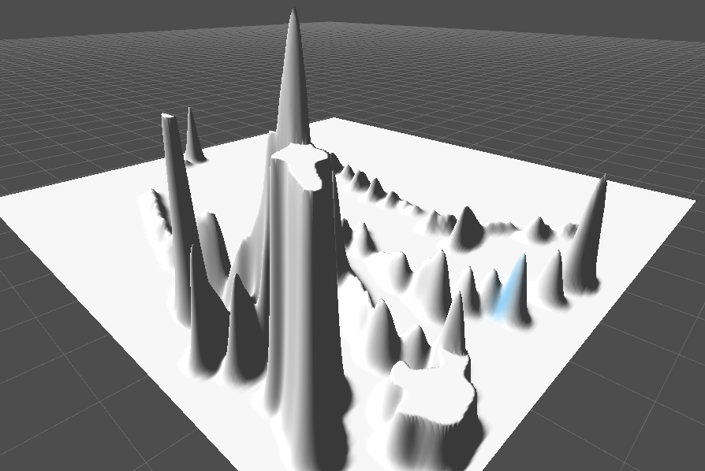
Segurando o Control
Segurando o control o mouse sai deformando as elevações e destruindo até apagar.
Smooth Height
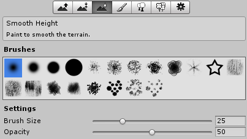
Esta suavisa as formas das elevações. Podemos alterar size e opacidade.
Ao arrastar o mouse sobre as superfícies ele sai suavizando.
Opacity maior suavisa mais.
Paint Texture
Com esta podemos importar uma textura existente ou várias e pintar a cor de uma sobre outra com uma das brochas e ainda podemos escolher a a força da pintura com o Target Strength.
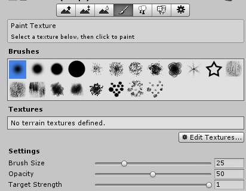
Para importar Textura clique em Edite Textures – Add Texture.
Se observar em um projeto limpo não encontrará nenhuma textura para adicionar.
Adicionar Pacote de Terreno
Clicar em Assets com o botão direito do mouse – Import Package – Terrain Assets
Import
Ele criará uma pasta Standard Assets na pasta Assets. Nesta pasta existem várias texturas para trabalhar com terreno.
Vamos novamente tentar importar a textura para o terreno.
Selecione o terreno na hierarquia – No Inspector clicar no Paint Textura (pincel) - Edite Textures – Add Texture – Texture - Select. Escolha uma textura e efetue um duplo clique sobre a mesma e depois clique em Add.
Veja que nosso terreno já está todo coberto com a textura que selecionamos.
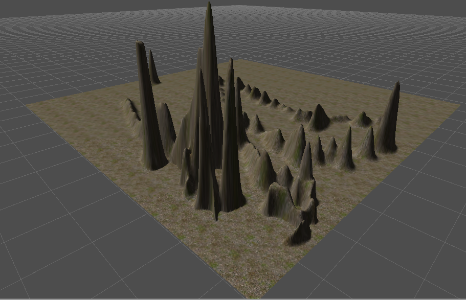
Podemos importar uma segunda e mais outras para pintar o terreno atual e seus elementos. Veja
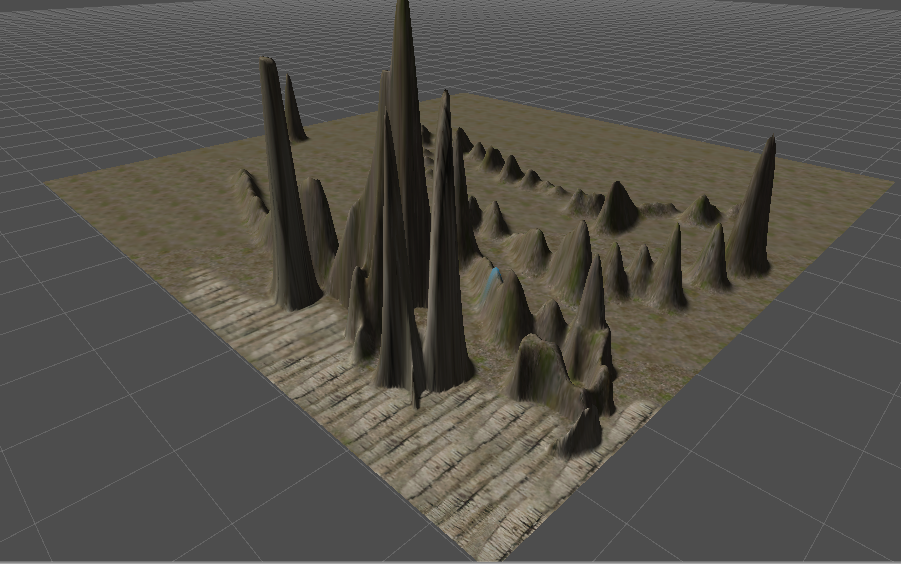
A sua criatividade é quem determina os limites.
Place Tree
Com esta adicionamos árvores para nosso terreno.
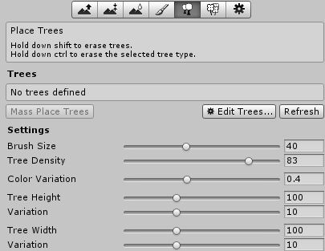
Clique em Edit Trees – Add Tree
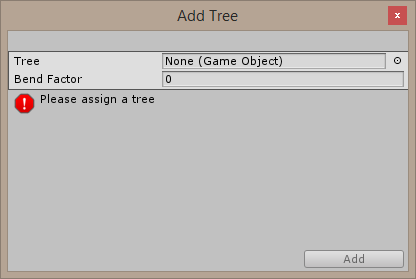
Clicar no pequeno círculo à direita de None (Game Object)
e selecionar Palm.
Efetuar um duplo clique em Palm e Add.
Agora configure o Size da Brush, a densidade, cor altura das árvores, etc. Então desenhe as árvores no terreno.
Veja um exemplo:
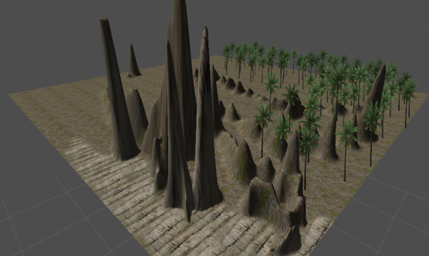
Ventos
Nossas árvores sofrem até influência dos ventos, balançando seus galhos. Podemos configurar as características do vento mexendo nas configurações do componente Terain (Script) em Wind Settings.
Paint Details
Com esta podemos adicionar grama, pedras, etc.
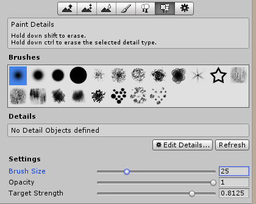
Veja
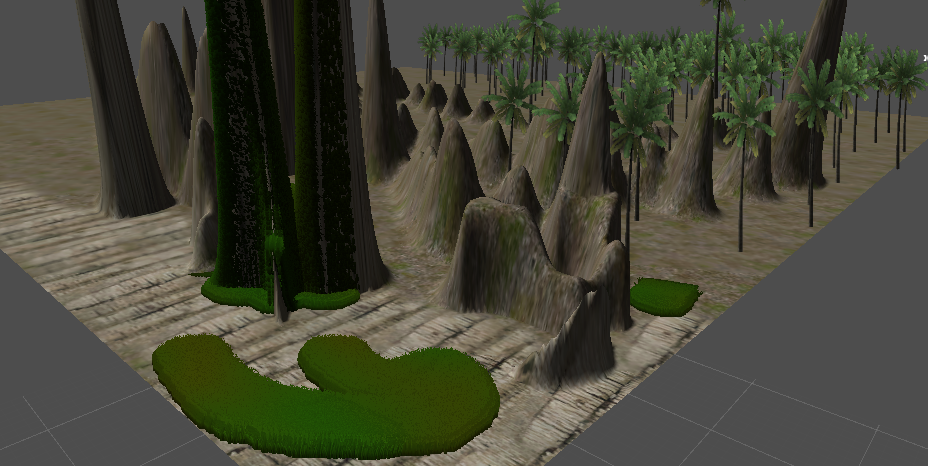
Podemos também importar texturas e objetos de terceiros.
SkyBox
Adicionar o ceu acima do terreno.
Para isso precisamos mexer em duas propriedades da Main Camera:
Clear Flags e Back Ground Color
Um exemplo é alterar de Skybox para Cor sólida e alterar a cor no Back Ground Color.
Criar Skybox
Selecionar a Main Camera
Component – Rendering – Skybox
Ele adiciona o componente ao final das propriedades da Main Camera.
Adicionar o pacote Skybox
Precisamos adicionar este pacote que tem o material do ceu.
Assets – Import Package – Skyboxes – Import
Selecionar Main Camera
Inspector ao final Skybox
Clicar no pequeno círculo à direita de Custom Skybox e selecionar Sunny1 SkyBox ou Sunny2 SkyBox.
Execuo o jogo no play para ver o ceu acima.
Existem materiais para noite enluarada entre outros.
Salvando o material do Skybox
Para que um material escolhido para o Skybox fique definitivamente, precisamos avisar ao renderizador:
Edit – Render Settings – Skybox Material – indicar o mesmo da Main Camera.
Problemas
-Caso a grid do terreno desapareça, ficando todo brando (com luz), então não poderemos desenhar nada sobre o terreno. Volte para o estado com a grid (Ctrl+Z) ou refaça tudo.
-A Main Camera deve estar posocionada adequadamente para que possamos desenhar os elementos do terreno.
-A grama não pode ser desenhada em qualquer local no terreno.
-Cuidado com o btão Flatten (Paint height), pois elimina todas as elevações do terreno.
Colisão em Árvores
Selecione a árvore
Adicione a colisão Capsula Collider